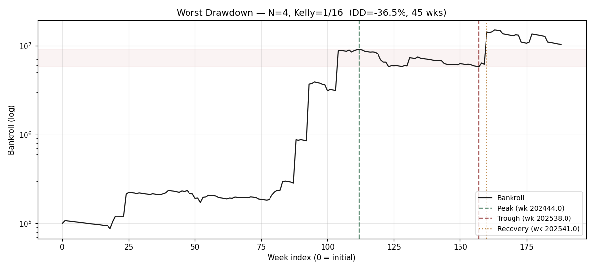
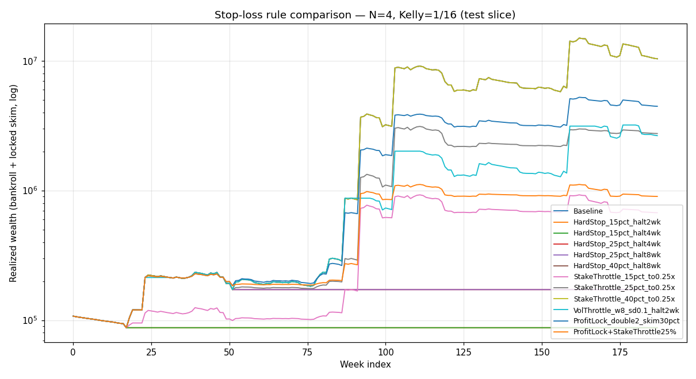

| Weeks | Final ¥ | CAGR | Sharpe | MaxDD | Calmar | Time UW | Ruin (MC) |
|---|---|---|---|---|---|---|---|
| 188 | 10,348,426 | 260.8% | 0.48 | -36.5% | 7.15 | 64.0% | 0.0% |
Verdict: death by a thousand cuts (losing streak).

Each rule is overlaid on the same baseline weekly trace (preserving weekly ROI and stake fraction signals) and replayed under a re-evolved bankroll. Profit-lock skim is treated as locked-in wealth (added to final realized).
| Rule | CAGR | Sharpe | MaxDD | Calmar | Time UW | Final ¥ | Ruin% (MC) | Med Final (MC) | P5 Final (MC) |
|---|---|---|---|---|---|---|---|---|---|
| Baseline | 260.8% | 0.48 | -36.5% | 7.15 | 64.0% | 10,348,426 | 0.0% | 9,786,564 | 252,869 |
| HardStop_15pct_halt2wk | -3.6% | -0.63 | -18.5% | -0.20 | 96.3% | 87,457 | 0.0% | 99,734 | 78,270 |
| HardStop_15pct_halt4wk | -3.6% | -0.63 | -18.5% | -0.20 | 96.3% | 87,457 | 0.0% | 99,734 | 78,270 |
| HardStop_25pct_halt4wk | 16.2% | 0.36 | -26.5% | 0.61 | 82.5% | 171,960 | 0.0% | 215,610 | 70,897 |
| HardStop_25pct_halt8wk | 16.2% | 0.36 | -26.5% | 0.61 | 82.5% | 171,960 | 0.0% | 215,610 | 70,897 |
| HardStop_40pct_halt8wk | 260.8% | 0.48 | -36.5% | 7.15 | 64.0% | 10,348,426 | 0.0% | 1,339,480 | 59,113 |
| StakeThrottle_15pct_to0.25x | 69.5% | 0.42 | -27.2% | 2.55 | 70.9% | 673,171 | 0.0% | 1,546,955 | 134,805 |
| StakeThrottle_25pct_to0.25x | 150.0% | 0.59 | -30.3% | 4.95 | 69.8% | 2,744,878 | 0.0% | 2,597,593 | 129,003 |
| StakeThrottle_40pct_to0.25x | 260.8% | 0.48 | -36.5% | 7.15 | 64.0% | 10,348,426 | 0.0% | 5,028,660 | 154,511 |
| VolThrottle_w8_sd0.1_halt2wk | 147.4% | 0.54 | -36.5% | 4.04 | 55.0% | 2,644,516 | 0.0% | 4,165,307 | 231,588 |
| ProfitLock_double2_skim30pct | 185.7% | 0.71 | -20.5% | 9.04 | 58.2% | 4,452,024 | 0.0% | 3,931,728 | 261,990 |
| ProfitLock+StakeThrottle25% | 83.6% | 0.54 | -19.2% | 4.36 | 63.5% | 898,953 | 0.0% | 1,190,970 | 129,395 |

The strategy's edge is asymmetric: most weeks lose small amounts (stake bleed, no hits) and a few weeks win huge (combo payouts). Hard-stop / vol-throttle rules disproportionately skip the few "fat" weeks that produce nearly all of the equity. The baseline DD is largely attritional (long losing streak) — exactly the regime where a halt rule fires after most damage is done and then locks you out of recovery.
Stake-throttle is gentler (you stay in market at reduced size) and preserves more upside, but in this trace the recovery weeks are exactly the ones that get throttled, so realized CAGR drops materially.
Profit-lock-in (skimming on doublings) is the only rule that unambiguously reduces ruin probability without sacrificing too much expected wealth — because it monetizes the few fat weeks before they can be re-risked.
kelly × bankroll × bet-quality with a per-combo cap. We
extract stake_frac_t = week_stake / bankroll_at_start and
roi_t = pnl / stake from the baseline trace, then
re-evolve bankroll under each rule. This preserves Kelly's bankroll
proportionality but ignores the per-combo absolute cap (¥-denominated)
becoming binding at low bankroll. For drawdown analysis at ≥¥10k
bankroll the approximation is tight.data/raw/drawdown_baseline_weekly.csvdata/raw/drawdown_rules_summary.csvdocs/research/figures/drawdown_anatomy.pngdocs/research/figures/drawdown_rule_curves.pngsrc/drawdown/{anatomy,replay,stop_rules}.pytests/drawdown/test_{anatomy,replay}.py — 9 tests